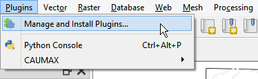

Requirements¶
Client requirements¶
Bridge requires QGIS 3.6 or more recent.
Server requirements¶
GeoNetwork¶
GeoCat Bridge is officially supported on any GeoNetwork latest (3.8)_ and 2 versions before (3.4 and 3.6)_. However most of the functionality will be operational from GeoNetwork version 2.6+.
MapServer¶
Requirement for MapServer are:
Officially supported is the latest minor version of Mapserver and 2 versions before, currently 7.0, 6.4 and 6.2. However any version from 5.6.0 is expected to operate fine in most of the cases.
FTP connection or file write access to MapServer project path
GeoServer¶
Requirements for GeoServer are:
Officially supported versions are 2.15, 2.14 and 2.13. However other versions since 2.4 are expected to operate fine in most of the cases.
Installation¶
To install the Bridge plugin for QGIS, follow these steps:
Open the QGIS Plugin Manager. The Plugin Manager can be opened using the menu entry.
You will see the following dialog:

Select the all section to show all available plugins.
In the search box, type bridge to filter the list of available plugins.
Click on the GeoCat Bridge plugin entry to display the information about the plugin:
Click on Install to install the plugin.
Once the plugin is installed, close the Plugin Manager and you will find a new menu entry under the menu, which contains the menus from the Bridge plugin.
You will also find a new toolbar button.